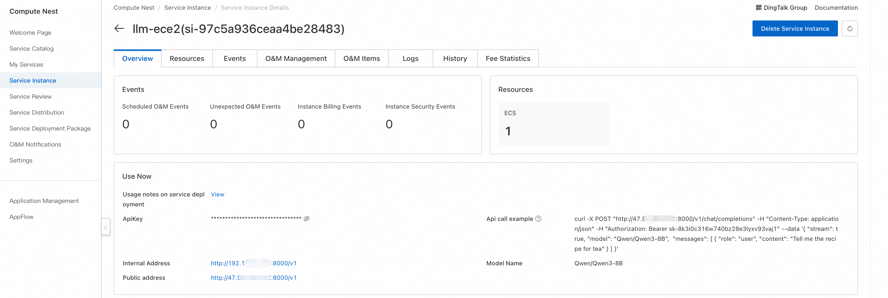
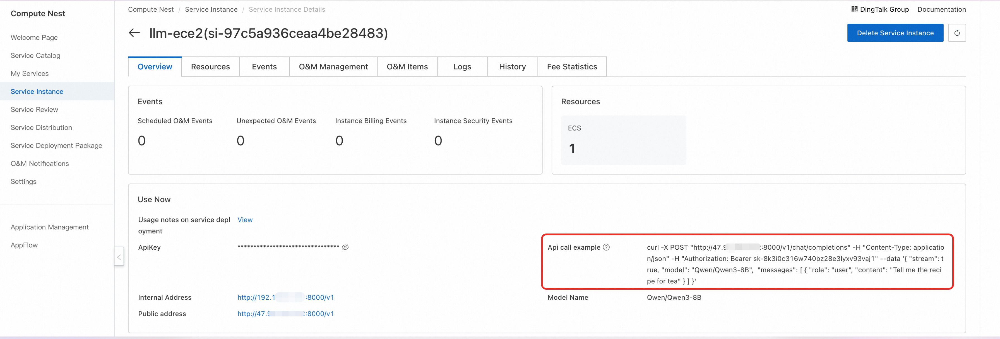

Introduction
Qwen3 is the latest generation of large language models in the Qwen series, offering a range of Dense and Mixture of Experts (MOE) models. Through extensive training, Qwen3 has made breakthrough advancements in reasoning, instruction following, agent capabilities, and multilingual support, featuring the following key characteristics:
- Unique support for seamless switching between thinking mode (for complex logical reasoning, mathematics, and coding) and non-thinking mode (for efficient general conversation), ensuring optimal performance across various scenarios.
- Significantly enhanced reasoning abilities, surpassing previous QwQ (in thinking mode) and Qwen2.5 instruction models (in non-thinking mode) in mathematics, code generation, and common sense logical reasoning.
- Excellent human preference alignment, demonstrating outstanding performance in creative writing, role-playing, multi-turn dialogues, and instruction following, providing a more natural, engaging, and immersive conversational experience.
- Proficient in Agent capabilities, able to precisely integrate external tools in both thinking and non-thinking modes, leading performance among open-source models in complex agent-based tasks.
- Support for over 100 languages and dialects, with strong multilingual understanding, reasoning, instruction following, and generation capabilities.
Deployment Configuration
0.6B, 1.7B, 4B, 8B models require a minimum configuration of 24GB VRAM for deployment
14B model requires a minimum configuration of 48GB VRAM for deployment
30B, 32B models require a minimum configuration of 96GB VRAM for deployment
235B model requires a minimum configuration of 8* 96GB VRAM for deployment
Usage Instructions
After completing the model deployment, you can view the usage methods on the service instance overview page in Compute Nest. It provides API call examples, intranet access addresses, public network access addresses, and ApiKey. The following sections will explain how to access and use these.

API Calls
Curl Command Call

You can directly use the API call example from the service instance overview page for Curl command calls. The specific structure for calling the model API is as follows:
Where ${ServerIP} can be filled with the IP address from either the intranet or public network address, ${ApiKey} is the ApiKey, and ${ModelName} is the model name.
curl -X Post http://${ServerIP}:8000/v1/chat/completions \
-H "Content-Type: application/json" \
-H "Authorization: Bearer ${ApiKey}" \
-d '{
"model": "${ModelName}",
"messages": [
{
"role": "user",
"content": "Write a letter to my daughter from the future 2035, telling her to study technology well, be the master of technology, and promote technological and economic development; she is currently in 3rd grade"
}
]
}'
Python Call
Here's a Python example code: Where ${ApiKey} needs to be filled with the ApiKey from the page; ${ServerUrl} needs to be filled with the public or intranet address from the page, including /v1.
from openai import OpenAI
##### API Configuration #####
openai_api_key = "${ApiKey}"
openai_api_base = "${ServerUrl}"
client = OpenAI(
api_key=openai_api_key,
base_url=openai_api_base,
)
models = client.models.list()
model = models.data[0].id
print(model)
def main():
stream = True
chat_completion = client.chat.completions.create(
messages=[
{
"role": "user",
"content": [
{
"type": "text",
"text": "Hello, introduce yourself, the more detailed the better.",
}
],
}
],
model=model,
max_completion_tokens=1024,
stream=stream,
)
if stream:
for chunk in chat_completion:
print(chunk.choices[0].delta.content, end="")
else:
result = chat_completion.choices[0].message.content
print(result)
if __name__ == "__main__":
main()
Web Application
Click on the online access link to jump to the corresponding page where you can directly access the model service online.